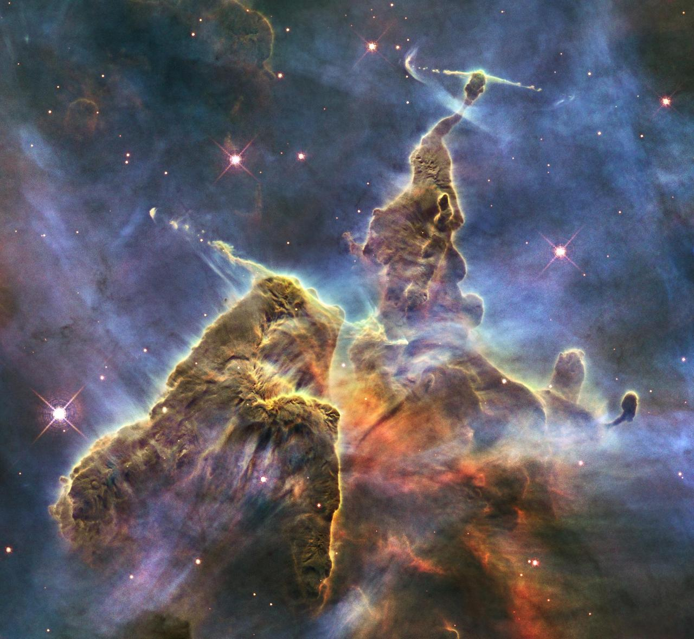

NASA
Space Travel
Everyone knows that NASA was the organization responsible for putting the first people on the Moon. They continue working on improving space travel by doing test flights and launches relatively regularly. Although travel beyond the Moon is still out of reach for humans, they have been able to successfully send unmanned spacecrafts to Mars and further into space to explore. They're working on sustainable aviation, reducing delays, and supersonic flight. All of this requires immense testing, most of which occurs in tunnels and chambers within Earth's atmosphere.

Showing us Space
Among many other things, NASA has provided us with high quality images of distant parts of space. From the first images of Earth to glimpses of stars well beyond our reach, NASA has been showing us just how beautiful and vast the universe is. Recently we've seen images from the surface of Mars, surfaces of planets like Jupiter, and the Hubble Space Telescope has been sending pictures of massive expanses of stars.

The International Space Station
The International Space Station has been in orbit for 8566 days at this time. There are currently eleven "orbital residents," but this will be changing by the end of the week as four astronauts return to Earth. While on the station, astronauts are part of various missions. One of these is Expedition 67, which is focusing on the biology and Earth science. They're interested in the impact of low-orbit living on human cells including immune cells. They're also mapping the dust-producing regions on Earth in order to inform a hypothesis about microgravity impacts on contruction on the Moon or Mars.
Click Here to see the official NASA site and learn more.